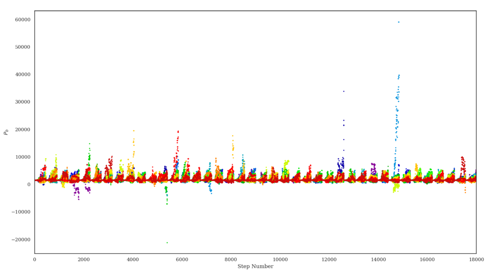
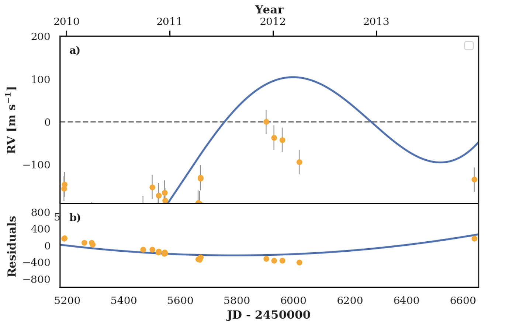

For me, science, and STEM in particular is an integral component of who I am.
I think it's really amazing to have a class about the intersection of the STEM fields, but I
think that it's our independent "STEM Project" that makes the class so interesting. For most of the year,
students at MAMS work on a STEM-related project that attempts to answer a question or solve a problem
that we're interesting in looking into. In February, we present the projects we chose to the community.
Moreover, projects from Mass Academy can also be selected for regional, state-wide, or even international
STEM fairs.
For the past few years, I've been working on researching and exploring the field of astrophysics,
particularly focusing on the detection of exoplanets, or planets outside the solar system. See
below for a more detailed insight into my project this year, and check out the pages at the end to
look at my projects from previous years!
The field of exoplanet detection is one of the fastest growing fields in astrophysics. Researchers expect to find alien life and truly habitable worlds within the n ext 20 years However, many measures must be taken to ensure that the data astronomers collect is as authentic as possible. This study investigates the authenticity of exoplanets currently detected. The inherent likelihood of discovering an authentic small-period planet around a sun-like star using the radial velocity method of detecting exoplanets. After the data was collected, the data was run through a planet detection pipeline and results were analyzed. Upper detection limits for planet discovery were calculated, and this was used to calculate the bias in the planet detection pipeline. Then, the rate of occurrence of small-period planets around sun-like stars was calculated with the obtained data. This was compared to Radial velocity planet occurrence was calculated from the results pf the planet detection pipeline in conjunction with the upper detection limits. The data was assessed to test the authenticity of exoplanets detected with the radial velocity method that are small-period exoplanets.
Problem Statement (Phrase 1):
Exoplanets, or planets outside of the solar system are often mis-detected due to the presence of astrophysical noise.
Goal:
The goal of this project is to assess the false-positive rate of small-period exoplanets detected with the radial velocity method.
Design a single pipeline that can be used to search for planets and
characterize pipeline completeness (Zechmeister et al. 2009, Bonfils et al. 2013)
Strategy: Take the constrained sample of stars and
take their planet signals out of them by running them through a planet detection algorithm. Then, check to see how many of the host stars
the exoplanet detection algorithm is able to pick up on.
Preliminary results: Below are graphs illustrating the detection of the exoplanet 0748-01711-1 using radial velocities from public HiRES data with the engineered planetary detection pipeline. The code for the pipeline was implemented in Python, and used the procedures from Zechmeister et al. 2009, as well as Bonfils et al. 2013. Moreover, since Markov Chain Monte Carlo (MCMC) estimation algorithm was used to obtain a keplerian fit for the planet, the RadVel radial-velocity fitting package was also used.
 Above are graphs representing (left) the detected planet's radial velocity, (the distance a planet causes its host star to move) over time, and (right) the MCMC simulations' trend plot when the simulated MCMC walkers estimated the planetary period.
Below is my Project Notes file for my research project. It contains all of my notes
with every research paper I've analyzed this year for my project.